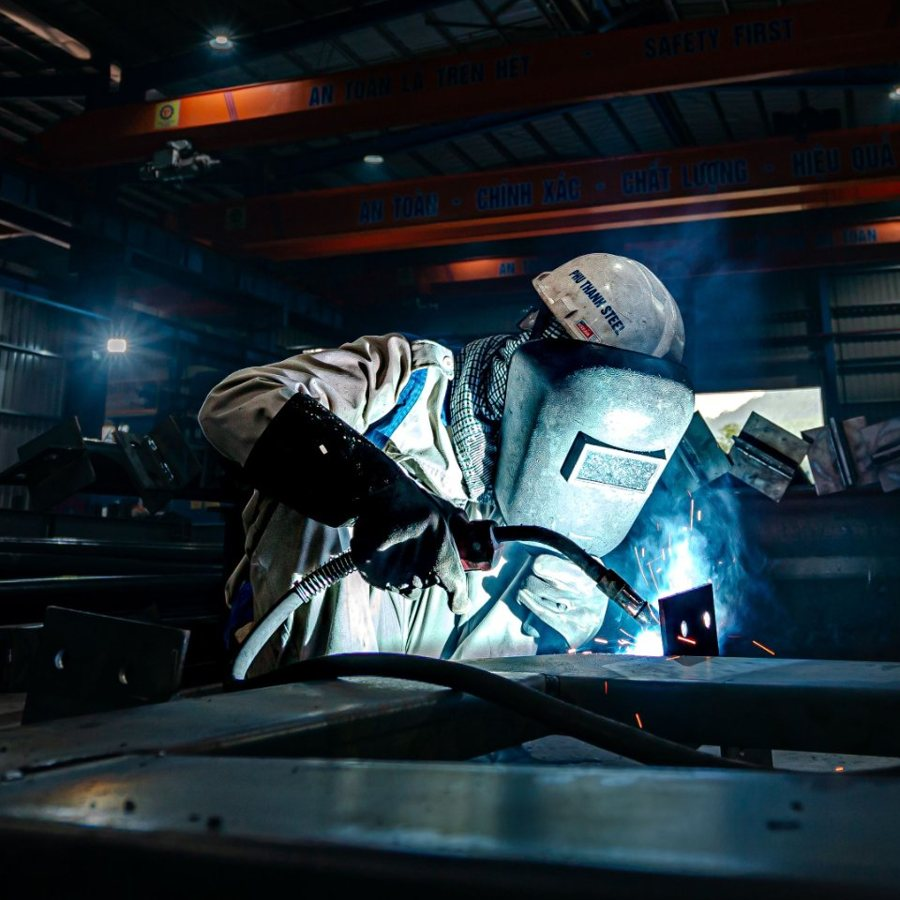

Learn More
A San Francisco-founded maker of welders and plasma cutters, built on operator feedback, named components, and U.S.-based support.

Origins
Everlast Welders, the welding brand of Everlast Power Products Inc., was founded in San Francisco, California, in 2004. The business began online as a small e-commerce operation and later expanded its distribution internationally, building a network of distributorships in multiple countries.
That history still shapes how the company works. International production and distribution sit alongside a domestic support base, and the lean habits of an online business remain part of its approach to pricing. Current product listings are published on the official Everlast Welders website.
Product Development
Everlast builds its development process around the person using the machine. Operator feedback informs design decisions before engineers finalize performance requirements, so the intended use of a welder or plasma cutter is part of the discussion from the start. The company develops equipment for home garages, professional welding shops, and worksites.
A closer look at how operator needs shape Everlast equipment covers the relationship between feedback and engineering in more detail. The same project-first thinking applies to the space around the machine, the subject of planning a home welding workshop.
Technology
In 2008, Everlast introduced its first-generation Power series of IGBT platform inverter welders and plasma cutters. IGBT stands for insulated-gate bipolar transistor, a semiconductor switch used in inverter power supplies to convert incoming electrical power for the welding or cutting process.
The platform is one part of the company’s product approach rather than a measure of any single machine, whose performance depends on the documented specifications for that model. The company also maintains the Everlast Welders Vimeo channel.
Manufacturing & Value
Everlast Welders manufactures its equipment offshore using name-brand, off-the-shelf electronic components from suppliers including Infineon, Siemens, Texas Instruments, IXYS, Toshiba, Sharp, and Panasonic. Combined with a lean operating structure, offshore production supports the company’s approach to keeping purchase prices down.
Manufacturing location and component sourcing describe different things: one concerns where a machine is built, the other which electronic parts go into it. Neither replaces the specifications of a particular model. The company also posts through Everlast Welders on X and its Bluesky account.
Support
Customer service, inventory, and product servicing for Everlast Welders are staffed and based in the United States. These functions are domestic even though manufacturing takes place offshore, a distinction examined in U.S. operations behind offshore-made equipment.
Everlast offers warranty coverage and a 30-day satisfaction policy. Terms depend on the product and the purchase, so the current conditions for a specific machine are best confirmed with the company before relying on them. The same applies when reading Everlast Generators reviews: an owner’s account describes one machine and one purchase, while current documentation and terms describe what applies to another.